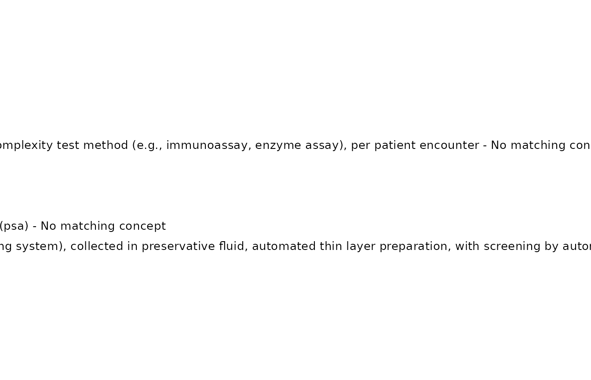

Introduction
In this example we’re going to summarise the characteristics of individuals with an ankle sprain, ankle fracture, forearm fracture, a hip fracture and different measurements using the Eunomia synthetic data.
We’ll begin by creating our study cohorts.
library(CDMConnector)
library(CohortConstructor)
library(CodelistGenerator)
library(PhenotypeR)
library(MeasurementDiagnostics)
library(dplyr)
library(ggplot2)
cdm <- omock::mockCdmFromDataset(datasetName = "synpuf-1k_5.3", source = "duckdb")
cdm$injuries <- conceptCohort(cdm = cdm,
conceptSet = list(
"ankle_sprain" = 81151,
"ankle_fracture" = 4059173,
"forearm_fracture" = 4278672,
"hip_fracture" = 4230399,
"measurements_cohort" = c(40660437L, 2617206L, 4034850L, 2617239L, 4098179L)
),
name = "injuries")
cdm$injuries |>
glimpse()
#> Rows: ??
#> Columns: 4
#> Database: DuckDB 1.5.2 [unknown@Linux 6.17.0-1010-azure:R 4.5.3//tmp/RtmpWXiRcU/file1f783884439a.duckdb]
#> $ cohort_definition_id <int> 5, 5, 5, 5, 5, 5, 5, 5, 5, 5, 5, 5, 5, 5, 5, 5, 5…
#> $ subject_id <int> 72, 853, 266, 22, 1, 353, 519, 820, 29, 635, 768,…
#> $ cohort_start_date <date> 2008-08-03, 2008-08-18, 2009-05-29, 2008-10-30, …
#> $ cohort_end_date <date> 2008-08-03, 2008-08-18, 2009-05-29, 2008-10-30, …Summarising code use
To get a good understanding of the codes we’ve used to define our
cohorts we can use the codelistDiagnostics() function.
code_diag <- codelistDiagnostics(cdm$injuries)Codelist diagnostics builds on CodelistGenerator and MeasurementDiagnostics R packages to perform the following analyses:
- Achilles code use: Which summarises the counts of our codes in our database based on achilles results using summariseAchillesCodeUse().
- Orphan code use: Orphan codes refer to codes that we did not include in our cohort definition, but that have any relationship with the codes in our codelist. So, although many can be false positives, we may identify some codes that we may want to use in our cohort definitions. This analysis uses summariseOrphanCodes().
- Cohort code use: Summarises the cohort code use in our cohort using summariseCohortCodeUse().
- Measurement diagnostics: If any of the concepts used in our codelist is a measurement, it summarises its code use using summariseCohortMeasurementUse().
- Drug diagnostics: If any of the concepts used in our codelist is a drug, it summarises its code use, including a summry of the exposure duration, the days between records, the daily dose, and the quantity.
We can activate or deactivate each analysis by setting to FALSE the following arguments:
code_diag1 <- codelistDiagnostics(cdm$injuries,
achillesCodeUse = TRUE,
orphanCodeUse = TRUE,
cohortCodeUse = TRUE,
drugDiagnostics = TRUE,
measurementDiagnostics = TRUE)Or subset the cohort to perform the drug diagnostics or the measurement diagnostics. For instance, in the example below we will create a subset of 1,000 participants of our cohort to perform the measurement diagnostics and the drug diagnostics. Subsets will be independent.
code_diag2 <- codelistDiagnostics(cdm$injuries,
measurementDiagnosticsSample = 1000,
drugDiagnosticsSample = 1000)Add codelist attribute
Some cohorts that may be created manually may not have the codelists
recorded in the cohort_codelist attribute. The package has
a utility function to record a codelist in a cohort_table
object:
cohortCodelist(cdm$injuries, cohortId = 1)
#>
#> - ankle_fracture (1 codes)
cdm$injuries <- cdm$injuries |>
addCodelistAttribute(codelist = list(new_codelist = c(1L, 2L)), cohortName = "ankle_fracture")
cohortCodelist(cdm$injuries, cohortId = 1)
#>
#> - new_codelist (2 codes)Visualise the results
We will now use different functions to visualise the results generated by CohortDiagnostics. Notice that these functions are from CodelistGenerator and MeasurementDiagnostics R packages packages.
Cohort code use
tableCohortCodeUse(code_diag)|
Database name
|
||||||||||||||
|---|---|---|---|---|---|---|---|---|---|---|---|---|---|---|
|
synpuf-1k
|
||||||||||||||
| Cohort name | Codelist name | Standard concept name | Standard concept ID | Source concept name | Source concept ID | Source concept value | Type concept id | Type concept name | Domain ID | Table | Diagnostic | Phenotyper version |
Estimate name
|
|
| Person count | Record count | |||||||||||||
| ankle_sprain | ankle_sprain | Sprain of ankle | 81151 | Other sprains and strains of ankle | 44829371 | 84509 | 38000230 | Outpatient header - 1st position | condition | condition_occurrence | codelistDiagnostics | 0.3.4.900 | 1 | 1 |
| 45756835 | Carrier claim header - 1st position | condition | condition_occurrence | codelistDiagnostics | 0.3.4.900 | 5 | 5 | |||||||
| Sprain of ankle, unspecified site | 44820150 | 84500 | 38000232 | Outpatient header - 3rd position | condition | condition_occurrence | codelistDiagnostics | 0.3.4.900 | 1 | 1 | ||||
| 38000235 | Outpatient header - 6th position | condition | condition_occurrence | codelistDiagnostics | 0.3.4.900 | 1 | 1 | |||||||
| 45756835 | Carrier claim header - 1st position | condition | condition_occurrence | codelistDiagnostics | 0.3.4.900 | 2 | 2 | |||||||
| 45756836 | Carrier claim header - 2nd position | condition | condition_occurrence | codelistDiagnostics | 0.3.4.900 | 4 | 4 | |||||||
| 45756837 | Carrier claim header - 3rd position | condition | condition_occurrence | codelistDiagnostics | 0.3.4.900 | 4 | 4 | |||||||
| 45756838 | Carrier claim header - 4th position | condition | condition_occurrence | codelistDiagnostics | 0.3.4.900 | 1 | 1 | |||||||
| 45756843 | Carrier claim detail - 1st position | condition | condition_occurrence | codelistDiagnostics | 0.3.4.900 | 10 | 10 | |||||||
| 45756844 | Carrier claim detail - 2nd position | condition | condition_occurrence | codelistDiagnostics | 0.3.4.900 | 2 | 2 | |||||||
| overall | – | NA | NA | NA | NA | NA | NA | NA | codelistDiagnostics | 0.3.4.900 | 27 | 31 | ||
| measurements_cohort | measurements_cohort | Drug screen, qualitative; multiple drug classes by high complexity test method (e.g., immunoassay, enzyme assay), per patient encounter | 40660437 | Drug screen, qualitative; multiple drug classes by high complexity test method (e.g., immunoassay, enzyme assay), per patient encounter | 40660437 | G0431 | 45754907 | Derived value | measurement | measurement | codelistDiagnostics | 0.3.4.900 | 26 | 45 |
| Immunology laboratory test | 4098179 | Antibody response examination | 44830850 | V7261 | 45754907 | Derived value | measurement | measurement | codelistDiagnostics | 0.3.4.900 | 11 | 11 | ||
| Other and unspecified nonspecific immunological findings | 44830461 | 79579 | 45754907 | Derived value | measurement | measurement | codelistDiagnostics | 0.3.4.900 | 9 | 9 | ||||
| Laboratory test | 4034850 | Laboratory examination | 44836706 | V726 | 45754907 | Derived value | measurement | measurement | codelistDiagnostics | 0.3.4.900 | 45 | 48 | ||
| Laboratory examination ordered as part of a routine general medical examination | 44823881 | V7262 | 45754907 | Derived value | measurement | measurement | codelistDiagnostics | 0.3.4.900 | 14 | 14 | ||||
| Laboratory examination, unspecified | 44835527 | V7260 | 45754907 | Derived value | measurement | measurement | codelistDiagnostics | 0.3.4.900 | 16 | 16 | ||||
| Other laboratory examination | 44835528 | V7269 | 45754907 | Derived value | measurement | measurement | codelistDiagnostics | 0.3.4.900 | 13 | 13 | ||||
| Pre-procedural laboratory examination | 44827407 | V7263 | 45754907 | Derived value | measurement | measurement | codelistDiagnostics | 0.3.4.900 | 10 | 10 | ||||
| Prostate cancer screening; prostate specific antigen test (psa) | 2617206 | Prostate cancer screening; prostate specific antigen test (psa) | 2617206 | G0103 | 45754907 | Derived value | measurement | measurement | codelistDiagnostics | 0.3.4.900 | 124 | 146 | ||
| Screening cytopathology, cervical or vaginal (any reporting system), collected in preservative fluid, automated thin layer preparation, with screening by automated system and manual rescreening under physician supervision | 2617239 | Screening cytopathology, cervical or vaginal (any reporting system), collected in preservative fluid, automated thin layer preparation, with screening by automated system and manual rescreening under physician supervision | 2617239 | G0145 | 45754907 | Derived value | measurement | measurement | codelistDiagnostics | 0.3.4.900 | 47 | 52 | ||
| overall | – | NA | NA | NA | NA | NA | NA | NA | codelistDiagnostics | 0.3.4.900 | 255 | 364 | ||
Measurement timings
tableMeasurementSummary(code_diag)| CDM name | Cohort name | Codelist name | Variable name | Estimate name | Estimate value |
|---|---|---|---|---|---|
| synpuf-1k | measurements_cohort | measurements_cohort | Cohort records | N | 339 |
| Cohort subjects | N | 255 | |||
| Number subjects | N (%) | 255 (100.00%) | |||
| Days between measurements | Median [Q25 – Q75] | 150 [19 – 356] | |||
| Range | 0 to 930 | ||||
| Measurements per subject | Median [Q25 – Q75] | 1.00 [1.00 – 2.00] | |||
| Range | 1.00 to 10.00 |
plotMeasurementSummary(code_diag)
Measurement value as concept
tableMeasurementValueAsConcept(code_diag)| CDM name | Cohort name | Concept name | Concept ID | Source concept name | Source concept ID | Domain ID | Variable name | Value as concept name | Value as concept ID | Estimate name | Estimate value |
|---|---|---|---|---|---|---|---|---|---|---|---|
| measurements_cohort | |||||||||||
| synpuf-1k | measurements_cohort | overall | overall | overall | overall | overall | Measurement records | No matching concept | 0 | N (%) | 364 (100.00%) |
| Prostate cancer screening; prostate specific antigen test (psa) | 2617206 | Prostate cancer screening; prostate specific antigen test (psa) | 2617206 | Measurement | Measurement records | No matching concept | 0 | N (%) | 146 (100.00%) | ||
| Screening cytopathology, cervical or vaginal (any reporting system), collected in preservative fluid, automated thin layer preparation, with screening by automated system and manual rescreening under physician supervision | 2617239 | Screening cytopathology, cervical or vaginal (any reporting system), collected in preservative fluid, automated thin layer preparation, with screening by automated system and manual rescreening under physician supervision | 2617239 | Measurement | Measurement records | No matching concept | 0 | N (%) | 52 (100.00%) | ||
| Laboratory test | 4034850 | Laboratory examination ordered as part of a routine general medical examination | 44823881 | Measurement | Measurement records | No matching concept | 0 | N (%) | 14 (100.00%) | ||
| Pre-procedural laboratory examination | 44827407 | Measurement | Measurement records | No matching concept | 0 | N (%) | 10 (100.00%) | ||||
| Laboratory examination, unspecified | 44835527 | Measurement | Measurement records | No matching concept | 0 | N (%) | 16 (100.00%) | ||||
| Other laboratory examination | 44835528 | Measurement | Measurement records | No matching concept | 0 | N (%) | 13 (100.00%) | ||||
| Laboratory examination | 44836706 | Measurement | Measurement records | No matching concept | 0 | N (%) | 48 (100.00%) | ||||
| Immunology laboratory test | 4098179 | Other and unspecified nonspecific immunological findings | 44830461 | Measurement | Measurement records | No matching concept | 0 | N (%) | 9 (100.00%) | ||
| Antibody response examination | 44830850 | Measurement | Measurement records | No matching concept | 0 | N (%) | 11 (100.00%) | ||||
| Drug screen, qualitative; multiple drug classes by high complexity test method (e.g., immunoassay, enzyme assay), per patient encounter | 40660437 | Drug screen, qualitative; multiple drug classes by high complexity test method (e.g., immunoassay, enzyme assay), per patient encounter | 40660437 | Measurement | Measurement records | No matching concept | 0 | N (%) | 45 (100.00%) | ||
plotMeasurementValueAsConcept(code_diag)
Measurement value as numeric
tableMeasurementValueAsNumber(code_diag)| CDM name | Cohort name | Concept name | Concept ID | Source concept name | Source concept ID | Domain ID | Unit concept name | Unit concept ID | Variable name | Estimate name | Estimate value |
|---|---|---|---|---|---|---|---|---|---|---|---|
| measurements_cohort | |||||||||||
| synpuf-1k | measurements_cohort | overall | overall | overall | overall | overall | No matching concept | 0 | Measurement records | N | 364 |
| Value as number | Median [Q25 – Q75] | – | |||||||||
| Q05 – Q95 | – | ||||||||||
| Q01 – Q99 | – | ||||||||||
| Range | – | ||||||||||
| Missing value, N (%) | 364 (100.00%) | ||||||||||
| Prostate cancer screening; prostate specific antigen test (psa) | 2617206 | Prostate cancer screening; prostate specific antigen test (psa) | 2617206 | Measurement | No matching concept | 0 | Measurement records | N | 146 | ||
| Value as number | Median [Q25 – Q75] | – | |||||||||
| Q05 – Q95 | – | ||||||||||
| Q01 – Q99 | – | ||||||||||
| Range | – | ||||||||||
| Missing value, N (%) | 146 (100.00%) | ||||||||||
| Screening cytopathology, cervical or vaginal (any reporting system), collected in preservative fluid, automated thin layer preparation, with screening by automated system and manual rescreening under physician supervision | 2617239 | Screening cytopathology, cervical or vaginal (any reporting system), collected in preservative fluid, automated thin layer preparation, with screening by automated system and manual rescreening under physician supervision | 2617239 | Measurement | No matching concept | 0 | Measurement records | N | 52 | ||
| Value as number | Median [Q25 – Q75] | – | |||||||||
| Q05 – Q95 | – | ||||||||||
| Q01 – Q99 | – | ||||||||||
| Range | – | ||||||||||
| Missing value, N (%) | 52 (100.00%) | ||||||||||
| Laboratory test | 4034850 | Laboratory examination ordered as part of a routine general medical examination | 44823881 | Measurement | No matching concept | 0 | Measurement records | N | 14 | ||
| Pre-procedural laboratory examination | 44827407 | Measurement | No matching concept | 0 | Measurement records | N | 10 | ||||
| Laboratory examination, unspecified | 44835527 | Measurement | No matching concept | 0 | Measurement records | N | 16 | ||||
| Other laboratory examination | 44835528 | Measurement | No matching concept | 0 | Measurement records | N | 13 | ||||
| Laboratory examination | 44836706 | Measurement | No matching concept | 0 | Measurement records | N | 48 | ||||
| Laboratory examination ordered as part of a routine general medical examination | 44823881 | Measurement | No matching concept | 0 | Value as number | Median [Q25 – Q75] | – | ||||
| Q05 – Q95 | – | ||||||||||
| Q01 – Q99 | – | ||||||||||
| Range | – | ||||||||||
| Missing value, N (%) | 14 (100.00%) | ||||||||||
| Pre-procedural laboratory examination | 44827407 | Measurement | No matching concept | 0 | Value as number | Median [Q25 – Q75] | – | ||||
| Q05 – Q95 | – | ||||||||||
| Q01 – Q99 | – | ||||||||||
| Range | – | ||||||||||
| Missing value, N (%) | 10 (100.00%) | ||||||||||
| Laboratory examination, unspecified | 44835527 | Measurement | No matching concept | 0 | Value as number | Median [Q25 – Q75] | – | ||||
| Q05 – Q95 | – | ||||||||||
| Q01 – Q99 | – | ||||||||||
| Range | – | ||||||||||
| Missing value, N (%) | 16 (100.00%) | ||||||||||
| Other laboratory examination | 44835528 | Measurement | No matching concept | 0 | Value as number | Median [Q25 – Q75] | – | ||||
| Q05 – Q95 | – | ||||||||||
| Q01 – Q99 | – | ||||||||||
| Range | – | ||||||||||
| Missing value, N (%) | 13 (100.00%) | ||||||||||
| Laboratory examination | 44836706 | Measurement | No matching concept | 0 | Value as number | Median [Q25 – Q75] | – | ||||
| Q05 – Q95 | – | ||||||||||
| Q01 – Q99 | – | ||||||||||
| Range | – | ||||||||||
| Missing value, N (%) | 48 (100.00%) | ||||||||||
| Drug screen, qualitative; multiple drug classes by high complexity test method (e.g., immunoassay, enzyme assay), per patient encounter | 40660437 | Drug screen, qualitative; multiple drug classes by high complexity test method (e.g., immunoassay, enzyme assay), per patient encounter | 40660437 | Measurement | No matching concept | 0 | Measurement records | N | 45 | ||
| Value as number | Median [Q25 – Q75] | – | |||||||||
| Q05 – Q95 | – | ||||||||||
| Q01 – Q99 | – | ||||||||||
| Range | – | ||||||||||
| Missing value, N (%) | 45 (100.00%) | ||||||||||
| Immunology laboratory test | 4098179 | Other and unspecified nonspecific immunological findings | 44830461 | Measurement | No matching concept | 0 | Measurement records | N | 9 | ||
| Antibody response examination | 44830850 | Measurement | No matching concept | 0 | Measurement records | N | 11 | ||||
| Other and unspecified nonspecific immunological findings | 44830461 | Measurement | No matching concept | 0 | Value as number | Median [Q25 – Q75] | – | ||||
| Q05 – Q95 | – | ||||||||||
| Q01 – Q99 | – | ||||||||||
| Range | – | ||||||||||
| Missing value, N (%) | 9 (100.00%) | ||||||||||
| Antibody response examination | 44830850 | Measurement | No matching concept | 0 | Value as number | Median [Q25 – Q75] | – | ||||
| Q05 – Q95 | – | ||||||||||
| Q01 – Q99 | – | ||||||||||
| Range | – | ||||||||||
| Missing value, N (%) | 11 (100.00%) | ||||||||||
plotMeasurementValueAsNumber(code_diag)